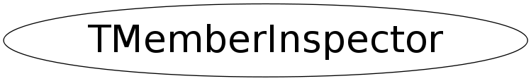

class TMemberInspector
TMemberInspector Abstract base class for accessing the datamembers of a class. Classes derived from this class can be given as argument to the ShowMembers() methods of ROOT classes. This feature facilitates the writing of class browsers and inspectors.
Function Members (Methods)
This is an abstract class, constructors will not be documented.
Look at the header to check for available constructors.
public:
| virtual | ~TMemberInspector() |
| void | AddToParent(const char* name) |
| static TClass* | Class() |
| void | GenericShowMembers(const char* topClassName, void* obj, Bool_t transientMember) |
| const char* | GetParent() const |
| Ssiz_t | GetParentLen() const |
| virtual void | Inspect(TClass* cl, const char* parent, const char* name, const void* addr) |
| void | InspectMember(TObject& obj, const char* name) |
| void | InspectMember(TClass* cl, void* pobj, const char* name) |
| void | InspectMember(const char* topclassname, void* pobj, const char* name, Bool_t transient) |
| virtual TClass* | IsA() const |
| TMemberInspector& | operator=(const TMemberInspector&) |
| void | RemoveFromParent(Ssiz_t startingAt) |
| virtual void | ShowMembers(TMemberInspector& insp) |
| virtual void | Streamer(TBuffer& b) |
| void | StreamerNVirtual(TBuffer& b) |
Data Members
private:
| TMemberInspector::TParentBuf* | fParent | current inspection "path" |
Class Charts
{kind=link}
{kind=link}
{kind=link}
{kind=link}

Function documentation
void GenericShowMembers(const char* topClassName, void* obj, Bool_t transientMember)
Call ShowMember() on obj. This could be faster if we implemented this either as a templated function or by rootcint-generated code using the typeid (i.e. the difference is a lookup in a TList instead of in a map). To avoid a spurrious error message in case the data member is transient and does not have a dictionary we check first.
void InspectMember(TObject& obj, const char* name)
void InspectMember(const char* topclassname, void* pobj, const char* name, Bool_t transient)
void InspectMember(TClass* cl, void* pobj, const char* name)
obj. ShowMembers(TMemberInspector& insp)